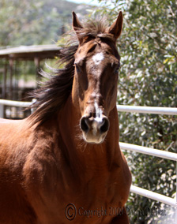

Welcome to DxD Photography!
Photographic images
give us a lasting record of the parts of our lives that we most want to
preserve. At DxD Photography, we have
the skills and experience to provide you with a unique array of images that is
tailored to you and your horse or pet.
No two photography sessions are ever alike, and we are always open to
any suggestions or ideas you may wish to offer to ensure you have the treasured
essence of your horse or pet captured forever.
In addition to
Equine Photography, DxD Photography brings the same care and attention to
portraiture of any pet or pet owner. Our Gallery photographs are available for
sale in various sizes. If you are interested in purchasing a use license for
any of the Gallery images, please use the contact page to inquire.
Our photography services
are provided primarily in Southern California.
Thank you for visiting the DxD
Photography website. We hope you
enjoy the images.
